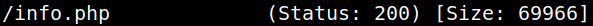
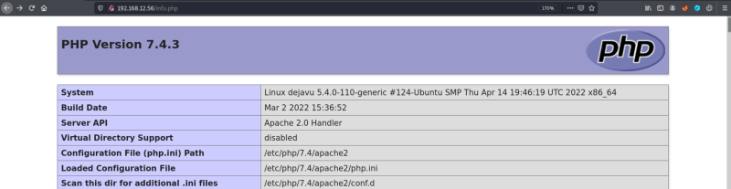
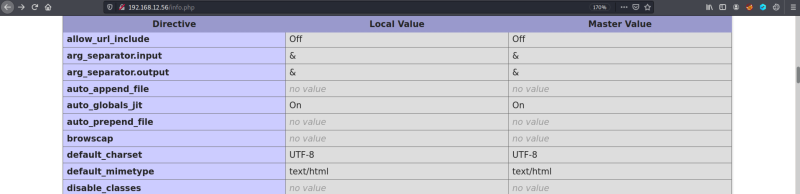
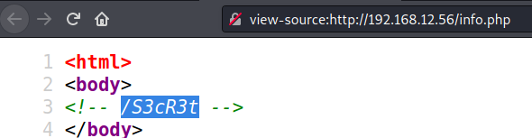

3.1 Scan the website with gobuster
1. Run the following code on your Kali Machine.
$ -gobuster -q dir -u http://192.168.12.56 -w /usr/share/wordlists/dirbuster/directory-list-2.3-medium.txt -x php --no-progress --no-error
Output:

2. Go to your browser and visit http://192.168.12.56/info.php.

3. Notice the some functions are disabled.

4. Righ-click on the page and select “View source code”.

You can see at the beginning of the page there are a comment “/S3cR3t” that seems a directory.